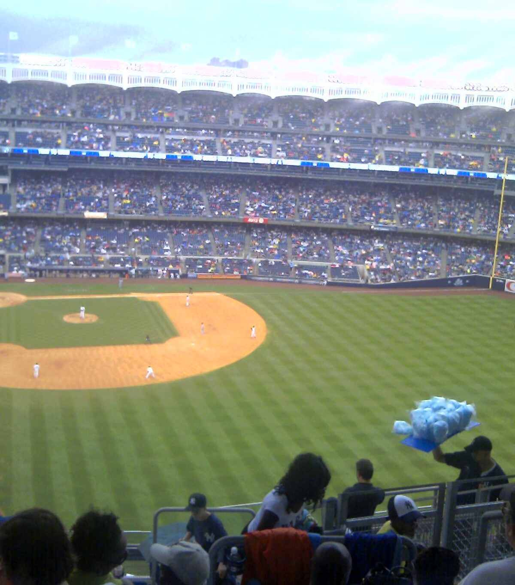

Visiting? get tickets and enjoy the game.
Stop by and see the Barclays Center (above). Located in Brooklyn N.Y. Between Altantic Avenue and Flatbush Avenue. Subways 2, 3, 4, 5, B, Q, D, N, R, W, will take you there also the LIRR.
Buses B37, B41, B45, B65, B103 will get you there too. On this night the NY Islanders went on to win the game.
Go New York Islanders!
The Famous Yankee Stadium
See the Pinstripes at work. Yankee Stadium, located at 1 East 161 Street in the Bronx. Subways 4 and D will take you to 161st. Also the Metro-north Railroad.
Buses: Bx1, BX2, BX6, SBS, Bx13.
When you get there have a N.Y. hot dog and some of that blue cotton candy.
Tennis Anyone?
The US Open starts the last week in August. If you are in the Queens area, get tickets to see your favorites. The US Open is held at the USTA Billie Jean King National Tennis Center, Flushing Meadow - Corona Park, Flushing, (Queens) NY. The #7 subway train will take you to Mets-Willets Point Station. The LIRR train connects to the #7 at Woodside Station.
My New York
Arthur Ashe Kids Day starts the US Open. The kids will love it because it is a great way to end the summer fun. On that day there is music concert, food, and fun. Kids get to play tennis get prizes and enjoy themselves, right before school starts. The stadium is the largest tennis venue in the world. What's new about the Arthur Ashe Stadium, is its brand new retractable roof. If it starts to rain, there are no more worries like in the past. No more long rain delays or cancellations. The show will go on.
To get a glimpse of how the stadium roof was made, click on link:
Arthur Ashe Roof Gallery